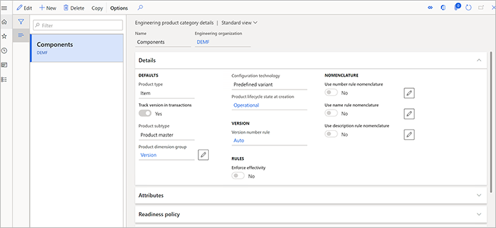
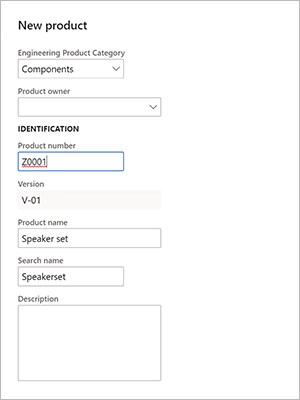

Exemplarische Vorgehensweise für die Funktionen der Verwaltung für technische Änderung
Important
Dynamics 365 for Finance and Operations hat sich zu speziell entwickelten Anwendungen entwickelt, mit denen Sie bestimmte Geschäftsfunktionen verwalten können. Weitere Informationen zu diesen Änderungen finden Sie im Dynamics 365-Lizenzierungshandbuch.
Dieses Thema bietet eine exemplarische Vorgehensweise, die zeigt, wie Sie mit der Verwaltung für technische Änderung arbeiten. Es wird jedes der wichtigsten Szenarien durchgespielt:
- Grundlegende Konfiguration der Funktionen
- Wie ein Ingenieurbüro ein neues technisches Produkt erstellt
- Wie ein Ingenieurbüro ein technisches Produkt an ein lokales Unternehmen freigibt
- Wie ein lokales Unternehmen ein Produkt, das von einem Ingenieurbüro freigegeben wurde, überprüfen und akzeptieren kann
- Wie ein lokales Unternehmen ein Engineering-Produkt in Standardtransaktionen verwenden kann
- So fügen Sie ein Engineering-Produkt zu einem Verkaufsauftrag hinzu
- Wie Sie Änderungen an einem Engineering-Produkt anfordern, indem Sie einen Änderungsantrag erstellen
- So planen Sie angeforderte Änderungen und implementieren sie, indem Sie einen Änderungsauftrag erstellen
- Wie man ein geändertes Produkt freigibt
Alle Übungen in diesem Thema verwenden die Standard-Beispieldaten, die für Microsoft Dynamics 365 Supply Chain Management bereitgestellt werden. Außerdem baut jede Übung auf der vorherigen Übung auf. Daher empfehlen wir Ihnen, die Übungen der Reihe nach von Anfang bis Ende durchzuarbeiten, insbesondere wenn Sie die Funktion der Verwaltung für technische Änderung noch nie verwendet haben. Auf diese Weise erhalten Sie ein vollständiges Verständnis für die Funktion.
Festlegen für das Beispielszenario
Um das Beispielszenario in diesem Thema nachvollziehen zu können, müssen Sie die Funktion zunächst vorbereiten, indem Sie Demodaten zur Verfügung stellen und ein paar benutzerdefinierte Datensätze hinzufügen.
Bevor Sie versuchen, eine der Übungen im Rest dieses Themas durchzuführen, befolgen Sie die Anweisungen in allen folgenden Unterabschnitten. In diesen Unterabschnitten werden auch einige wichtige Einstellungsseiten vorgestellt, die Sie verwenden werden, wenn Sie die Verwaltung für technische Änderung für Ihre eigene Organisation festlegen.
Standard-Demodaten zur Verfügung stellen
Arbeiten Sie an einem System, auf dem die Standard-Demodaten installiert sind (This is an external link). Die Standard-Demodaten fügen Daten für mehrere juristische Entitäten (Firmen und Organisationen) der Demo hinzu. Während Sie die Übungen durcharbeiten, werden Sie den Firmen-Picker auf der rechten Seite der Navigationsleiste verwenden, um zwischen einer Firma (DEMF), die als Ingenieurorganisation festgelegt ist, und einer anderen Firma (USMF), die als Betriebsorganisation festgelegt ist, zu wechseln.
Festlegen einer Engineering-Organisation
Eine Engineering-Organisation besitzt die Engineering-Daten und ist für das Produktdesign und Produktänderungen verantwortlich. Um Ihre Engineering-Organisationen festzulegen, gehen Sie wie folgt vor.
Gehen Sie zu Verwaltung für technische Änderung > Einrichten > Entwicklungsorganisationen.
Wählen Sie Neu, um dem Raster eine Zeile hinzuzufügen, und legen Sie die folgenden Werte dafür fest:
- Engineering-Organisation: DEMF
- Organisationsname: Contoso Entertainment System Germany

Festlegen der Produktdimensionsgruppe der Version
Gehen Sie zu Produktinformationsmanagement > Einrichten > Dimensionen und Variantengruppen > Produktdimensionsgruppen.
Wählen Sie Neu, um eine Produktdimensionsgruppe zu erstellen.
Legen Sie das Feld Name auf Version fest.
Wählen Sie Speichern, um die neue Dimension zu speichern und Werte in das Produktdimensionen Inforegister zu laden.
Legen Sie auf der Inforegisterkarte Produktdimensionen die Version als aktive Produktdimension fest.

Festlegen von Produktlebenszyklusstatus
Da ein technisches Produkt seinen Lebenszyklus durchläuft, ist es wichtig, dass Sie steuern können, welche Transaktionen für jeden Lebenszyklus-Status erlaubt sind. Gehen Sie folgendermaßen vor, um die Zustände des Produktlebenszyklus festzulegen.
Gehen Sie zu Verwaltung für technische Änderung > Einrichten > Produktlebenszyklus-Status.
Wählen Sie Neu, um einen Lebenszyklus-Status hinzuzufügen, und legen Sie die folgenden Werte dafür fest:
- Status: Betriebsbereit
- Beschreibung: Betriebsbereit
Wählen Sie Speichern, um den neuen Status des Lebenszyklus zu speichern und die Werte in das Inforegister Aktivierte Geschäftsprozesse zu laden.
Wählen Sie auf der Registerkarte Aktivierte Geschäftsprozesse die Geschäftsprozesse aus, die verfügbar sein sollen. Für dieses Beispiel lassen Sie das Feld Richtlinie für alle Geschäftsprozesse auf Aktiviert festgelegt.

Wählen Sie Neu, um einen weiteren Lebenszyklus-Status hinzuzufügen, und legen Sie die folgenden Werte dafür fest:
- Status: Prototyp
- Beschreibung: Prototyp
Wählen Sie Speichern, um den neuen Status des Lebenszyklus zu speichern und die Werte in das Inforegister Aktivierte Geschäftsprozesse zu laden.
Wählen Sie auf der Registerkarte Aktivierte Geschäftsprozesse die Geschäftsprozesse aus, die verfügbar sein sollen. Für dieses Beispiel legen Sie das Feld Richtlinie auf Aktiviert mit Warnung für alle Geschäftsprozesse fest.
 von Geschäftsprozessen für einen Lebenszyklusstatus")
Festlegen einer Versionsnummernregel
Gehen Sie zu Verwaltung für technische Änderung > Einrichten > Produktversionsnummernregel.
Wählen Sie Neu, um eine Regel hinzuzufügen, und legen Sie die folgenden Werte für sie fest:
- Name: Auto
- Nummernregel: Auto
- Format: V-##

Festlegen einer Produktfreigabe-Richtlinie
Gehen Sie zu Verwaltung für technische Änderung > Einrichten > Produktfreigabe-Richtlinien.
Wählen Sie Neu, um eine Richtlinie zur Freigabe hinzuzufügen, und legen Sie die folgenden Werte dafür fest:
- Name: Komponenten
- Beschreibung: Komponenten
Legen Sie im Inforegister Allgemein die folgenden Werte fest:
- Produkttyp: Artikel
- Vorlagen anwenden: Immer
- Aktiv: Ja
Wählen Sie auf dem Inforegister Alle Produkte Hinzufügen, um eine Zeile hinzuzufügen, und legen Sie die folgenden Werte dafür fest:
- Firma: DEMF
- Vorlage freigegebenes Produkt: D0006
Wählen Sie Hinzufügen, um eine weitere Zeile hinzuzufügen, und legen Sie die folgenden Werte dafür fest:
- Firmenkonten-ID: USMF
- Vorlage freigegebenes Produkt: D0006
- Stückliste empfangen: Aktivieren Sie dieses Kontrollkästchen.
- Stückliste kopieren Freigabe: Aktivieren Sie dieses Kontrollkästchen.
- Stückliste kopieren Aktivierung: Aktivieren Sie dieses Kontrollkästchen.
- Arbeitsplan empfangen: Aktivieren Sie dieses Kontrollkästchen.
- Freigabe Arbeitsplan kopieren: Aktivieren Sie dieses Kontrollkästchen.
- Aktivierung des Arbeitsplans kopieren: Aktivieren Sie dieses Kontrollkästchen.
Festlegen einer Engineering-Produktkategorie
Engineering-Produktkategorien bilden die Grundlage für das Erstellen von Engineering-Produkten (d. h. Produkte, die versioniert und über die Verwaltung für technische Änderung gesteuert werden). Gehen Sie folgendermaßen vor, um Engineering-Produktkategorien festzulegen.
Gehen Sie zu Verwaltung für technische Änderung > Details zur Entwicklungsproduktkategorie.
Wählen Sie Neu, um eine Kategorie zu erstellen.
Legen Sie auf der Inforegisterkarte Details die folgenden Werte fest:
- Name: Komponenten
- Engineering-Organisation: DEMF
- Produkttyp: Artikel
- Version in Transaktionen verfolgen: Ja
- Produktdimensionen-Gruppe: Version
- Produkt-Lebenszyklus-Status bei der Erstellung: Operational
- Versionsnummer-Regel: Auto
- Wirkungsgrad erzwingen: Nein
- Nomenklatur der Verwendungsnummer-Regel: Nein
- Benutzername Regel Nomenklatur: Nein
- Benutzungsbeschreibung Regel Nomenklatur: Nein
Legen Sie auf dem Inforegister Freigaberichtlinie das Feld Produktfreigaberichtlinie auf Komponenten fest.
Wählen Sie Speichern aus.

Produktabnahmebedingungen festlegen
Wechseln Sie über die Firmenauswahl auf der rechten Seite der Navigationsleiste zur USMF juristischen Entität (Firma).
Gehen Sie zu Verwaltung für technische Änderung > Einrichten > Parameter der Verwaltung für technische Änderung.
Legen Sie auf der Registerkarte Freigabesteuerung im Abschnitt Produktabnahme das Feld Produktabnahme auf Manuell fest.

Ein neues Engineering-Produkt erstellen
Ein Engineering-Produkt ist ein Produkt, das über die Verwaltung für technische Änderung versioniert und gesteuert wird. Mit anderen Worten: Sie können die Änderungen während seiner Lebensdauer kontrollieren, und die Änderungsinformationen werden mit Änderungsaufträgen gespeichert. Gehen Sie folgendermaßen vor, um ein Engineering-Produkt zu erstellen.
Stellen Sie sicher, dass Sie sich in der rechtlichen Entität Ihrer Engineering-Organisation befinden (DEMF für dieses Beispiel). Verwenden Sie bei Bedarf die Firmenauswahl auf der rechten Seite der Navigationsleiste.
Öffnen Sie die Seite Freigegebene Produkte, indem Sie einen der folgenden Schritte ausführen:
- Wechseln Sie zu Produktinformationsverwaltung > Produkte >Freigegebene Produkte.
- Gehen Sie zu Verwaltung für technische Änderung > Allgemein > Freigegebene Produkte.
Wählen Sie im Aktivitätsbereich auf der Registerkarte Produkt in der Gruppe Neu die Option Engineering-Produkt.
Legen Sie im Dialogfeld Neues Produkt die folgenden Werte fest:
- Engineering-Produktkategorie: Komponenten
- Produktnummer: Z0001
- Produktname: Lautsprecherset

Beachten Sie, dass das Feld Version automatisch festgelegt wird, indem die Regel für die Produktversionsnummer verwendet wird, die Sie zuvor eingerichtet haben.
Wählen Sie OK aus, um das Produkt zu erstellen und das Dialogfeld zu schließen.
Die Detailseite für das neue Produkt wird geöffnet. Beachten Sie, dass die Werte für einige Felder bereits ausgefüllt sind, z. B. Lagerungsdimensionsgruppe, Verfolgungsdimensionsgruppe und/oder Elementmodellgruppe. Diese Felder wurden automatisch festgelegt, weil das Produkt in der rechtlichen Entität DEMF freigegeben wird und die Produktfreigabe-Richtlinie Komponenten verwendet, die mit der technischen Produktkategorie Komponenten verbunden ist. Da Sie zuvor das Element D0006 als Vorlage verwendet haben, um eine Zeile für die juristische Entität DEMF festzulegen, wurden die ausgefüllten Werte aus dem Element D0006 übernommen.

Wählen Sie im Aktivitätsbereich auf der Registerkarte Entwickler in der Gruppe Verwaltung für technische Änderung die Option Entwicklungsversionen, um die Versionen des Produkts anzuzeigen.

Auf der Seite Engineering-Versionen stellen Sie fest, dass es nur eine Version für das Produkt gibt, und diese ist aktiv.
Wählen Sie die Version aus, um ihre Details anzuzeigen.
Wählen Sie auf der Seite Engineering-Version auf dem Inforegister Stückliste die Option Stückliste erstellen.
Legen Sie im Dialogfeld Stückliste erstellen die folgenden Werte fest:
- Stücklistennummer: Z0001
- Name: Lautsprechersatz
- Standort: 1
Wählen Sie OK, um die Stückliste hinzuzufügen, und schließen Sie das Dialogfeld.
Wählen Sie auf dem Inforegister Stückliste die Option Stückliste.
Fügen Sie auf der Seite Stückliste auf dem Inforegister Stücklistenzeilen drei Zeilen hinzu, jeweils eine für die Elementnummern D0001, D0003 und D0006.

Wählen Sie Speichern aus.
Schließen Sie die Seite.
Wählen Sie auf der Seite Konstruktionsversion auf dem Inforegister Stückliste die Option Freigeben.
Im angezeigten Dialogfeld wählen Sie OK aus.

Wählen Sie auf der Seite Engineering-Version auf der Registerkarte Stückliste Aktivieren.
Beachten Sie, dass die Kontrollkästchen Aktiv und Genehmigt für die Stückliste aktiviert sind.

Schließen Sie die Seite.
Ein Konstruktionsprodukt an eine lokale Firma freigeben
Das Produkt wurde nun von der Konstruktionsabteilung entworfen. In diesem Beispiel ist das Produkt ein Prototyp, den das Engineering für einen Kunden entworfen hat. Da der Kunde ein Kunde der juristischen Entität USMF ist, muss das Produkt für diese juristische Entität freigegeben werden.
Halten Sie die juristische Entität auf DEMF festgelegt. (Verwenden Sie bei Bedarf den Firmenpicker auf der rechten Seite der Navigationsleiste).
Wechseln Sie zu Produktinformationsverwaltung > Produkte >Freigegebene Produkte.
Wählen Sie das Produkt Z0001.
Wählen Sie im Aktivitätsbereich auf der Registerkarte Produkt in der Gruppe Pflegen die Option Produktstruktur freigeben, um den Assistenten Produkte freigeben zu öffnen.
Aktivieren Sie auf der Seite Auszugebende Engineering-Produkte auswählen das Kontrollkästchen Auswählen für das Produkt Z0001.

Wählen Sie Details zur Freigabe.
Die Seite Produktfreigabedetails wird angezeigt, auf der Sie die Details des freizugebenden Produkts und seine Produktstruktur überprüfen können. Beachten Sie, dass die Option Stückliste senden auf Ja festgelegt ist. Daher werden sowohl das Produkt Z0001 als auch alle seine untergeordneten Elemente aus der Stückliste freigegeben.
Sie können ein beliebiges untergeordnetes Element im linken Fensterbereich auswählen, um seine Details zu überprüfen. Wenn ein untergeordnetes Element eine Stückliste hat, können Sie auch auswählen, dass die Stückliste dieses untergeordneten Elements freigegeben wird.
Schließen Sie die Seite, um zum Assistenten Produkte freigeben zurückzukehren.
Wählen Sie Weiter, um die Seite Produkte zur Freigabe auswählen zu öffnen. Wenn Sie Standardprodukte (ohne Engineering) ausgewählt haben, werden diese auf dieser Seite angezeigt. Beachten Sie, dass, wenn Sie ein Standardprodukt durch Auswahl von Produktstruktur freigeben freigeben, auch dessen Stückliste und Arbeitsplan freigegeben werden.

Wählen Sie Weiter, um die Seite Auszugebende Produktvarianten auswählen zu öffnen. Für dieses Beispiel gibt es keine Varianten.
Wählen Sie Nächste, um die Seite Firmen auswählen zu öffnen.
Wählen Sie die Firmen aus, für die das Produkt freigegeben werden soll. Für dieses Beispiel aktivieren Sie das Kontrollkästchen für USMF.
Wählen Sie Weiter, um die Seite Auswahl bestätigen zu öffnen.
Wählen Sie Fertig stellen aus.
Prüfen und akzeptieren Sie das Produkt, bevor Sie es in der lokalen Firma freigeben
Die Konstruktionsabteilung hat nun die Informationen für die lokalen Firmen freigegeben, in denen das Produkt verwendet werden soll. In diesem Beispiel ist die lokale Firma USMF.
Da Sie auf der Seite Parameter der Verwaltung für technische Änderung für die Firma USMF das Feld Produktannahme auf Manuell festgelegt haben, müssen die Produkte manuell angenommen werden, bevor sie für diese Firma freigegeben werden. Mit anderen Worten: Sie müssen überprüft und akzeptiert werden, bevor sie zu freigegebenen Produkten werden.
Gehen Sie folgendermaßen vor, um das Produkt zu prüfen und in der Firma USMF freizugeben.
Legen Sie die juristische Entität auf USMF fest. (Verwenden Sie die Firmenauswahl auf der rechten Seite der Navigationsleiste.)
Gehen Sie zu Verwaltung für technische Änderung > Allgemein > Produktfreigaben > Offene Produktfreigaben.
Auf der Seite Offene Produktfreigaben wird das Produkt Z0001 angezeigt, das den Status Anstehende Abnahme hat.
Wählen Sie den Wert in der Spalte Produktnummer, um die Seite Produktfreigabedetails zu öffnen. Beachten Sie die folgenden Details:
- Das Inforegister Allgemein zeigt Informationen über die Produktfreigabe, wie z. B. die freigebende Firma (DEMF für dieses Beispiel), den freigebenden Standort (1) und den empfangenden Standort (1). Da Sie im Assistenten Produkte freigeben keinen empfangenden Standort angegeben haben, wird der Wert des freigebenden Standorts in den empfangenden Standort kopiert.
- Das Inforegister Freigabedetails zeigt Informationen über das Produkt und die Version, die freigegeben wurde. Hier können Sie Einstellungen wie z. B. die Gültigkeitsdaten ändern.
- Das Inforegister Arbeitsplan zeigt den Arbeitsplan des Produkts an. Für dieses Beispiel haben Sie jedoch keine Arbeitspläne freigegeben.

Wenn Sie die Informationen überprüft haben, sind Sie bereit, das Produkt anzunehmen und es auf diese Weise im Unternehmen USMF freizugeben. Wählen Sie im Aktivitätsbereich Aktionen > Annehmen.
Das Produkt ist nun in der Firma USMF freigegeben. Wechseln Sie zu Produktinformationsverwaltung > Produkte > Freigegebene Produkte. Sie sollten das Element Z0001 sehen.
Verwenden Sie das Produkt in Transaktionen in der lokalen Firma
Der Stammdatenmanager für das Unternehmen USMF möchte sicherstellen, dass sich das Produkt im Status Prototyp befindet, um sicherzustellen, dass Benutzer gewarnt werden, wenn sie es versehentlich zu Vorgängen hinzufügen, an denen sie arbeiten.
Wechseln Sie zu Produktinformationsverwaltung > Produkte >Freigegebene Produkte.
Wählen Sie das Produkt Z0001, um seine Detailseite zu öffnen. (Sie können den Filter verwenden, um das Produkt zu finden.)
Wählen Sie im Aktivitätsbereich auf der Registerkarte Entwickler in der Gruppe Verwaltung für technische Änderung die Option Entwicklungsversionen.
Wählen Sie auf der Seite Engineering-Versionen die Versionsnummer V-01, um deren Detailseite zu öffnen.
Wählen Sie im Aktivitätsbereich auf der Registerkarte Produkt in der Gruppe Lebenszyklusstatus die Option Lebenszyklusstatus ändern.
Legen Sie im Dropdown-Dialogfeld Lebenszyklusstatus ändern das Feld Status auf Prototyp fest und wählen Sie dann OK.

Hinzufügen des Engineering-Produkts zu einem Verkaufsauftrag
Das Produkt kann nun an einen Kunden verkauft werden. Führen Sie die folgenden Schritte aus, um das Produkt zu einem Verkaufsauftrag hinzuzufügen.
Wechseln Sie zu Vertrieb und Marketing > Aufträge > Alle Aufträge.
Wählen Sie im Aktivitätsbereich Neu aus.
Legen Sie im Dialogfeld Verkaufsauftrag erstellen das Feld Kundenkonto auf US-0002 fest, und wählen Sie dann OK.
Der neue Auftrag wird geöffnet. Fügen Sie im Inforegister Kundenauftragszeilen eine Zeile hinzu, und legen Sie das Feld Positionsnummer auf Z000 fest.
Wählen Sie im Aktionsbereich Speichern aus.
Sie erhalten eine Warnmeldung, die Sie darüber informiert, dass das Element den Status Prototyp hat. Da es sich bei der Meldung jedoch nur um eine Warnung handelt, wurde der Auftrag trotzdem erstellt.

Änderungsanforderung für das Engineering-Produkt
Das Produkt wurde an einen Kunden gesendet, aber der Kunde war nicht ganz zufrieden und gibt ein Feedback mit Verbesserungsvorschlägen. Während der Kunde mit einem Vertriebsmitarbeiter am Telefon spricht, kann der Vertriebsmitarbeiter die Änderungen anfordern, die der Kunde beschrieben hat.
Wechseln Sie zu Vertrieb und Marketing > Aufträge > Alle Aufträge.
Suchen und öffnen Sie den Verkaufsauftrag, den Sie in der vorherigen Übung erstellt haben.
Wählen Sie auf dem Inforegister Kundenauftragszeilen die Option Verwaltung für technische Änderung > Neuer Änderungsantrag.

Füllen Sie den Änderungsantrag aus, basierend auf den Rückmeldungen des Kunden. Legen Sie für dieses Beispiel die folgenden Werte fest:
- Änderungsanforderung: 555
- Titel: Z0001 Kundenänderung
- Priorität: niedrig
- Kategorie: Änderung festlegen
- Schweregrad: Mittel
Wählen Sie auf dem Inforegister Information die Option Neue >-Notiz, um dem Raster eine Notiz hinzuzufügen.
Geben Sie im Feld Beschreibung für die neue Notiz an, dass das Element D0003 aus der Stückliste gelöscht werden soll. Wenn Sie weitere Informationen für die Notiz hinzufügen müssen, können Sie Text in das Feld Hinweise eingeben.

Wählen Sie im Aktionsbereich Speichern aus.
Beachten Sie, dass das Element automatisch auf der Inforegisterkarte Produkte hinzugefügt wurde und dass die Quelle des Änderungsantrags (der Verkaufsauftrag) auf der Inforegisterkarte Quelle hinzugefügt wurde.
Änderungen am Produkt mit Hilfe eines Änderungsauftrags vornehmen
Der Vertriebsmitarbeiter weiß, dass das Produkt wichtig ist und speziell für den Kunden entwickelt wurde. Daher ruft der Vertriebsmitarbeiter einen Ingenieur in der DEMF-Firma an, um ihn über den Änderungswunsch zu informieren. Auf diese Weise kann der Ingenieur den Prozess beschleunigen.
Der Ingenieur prüft nun die Anfrage des Kunden und erstellt einen Änderungsauftrag für das Produkt.
Da der Ingenieur in der Firma DEMF arbeitet, legen Sie die juristische Entität auf DEMF fest. (Verwenden Sie die Firmenauswahl auf der rechten Seite der Navigationsleiste.)
Gehen Sie zu Verwaltung für technische Änderung > Gemeinsame > Entwicklungsänderungsaufträge.
Öffnen Sie die Änderungsanforderung 555.
Überprüfen Sie die Informationen und genehmigen Sie dann die Änderung. Wählen Sie im Aktivitätsbereich auf der Registerkarte Änderungsanfrage in der Gruppe Änderungsstatus die Option Genehmigen.
Gehen Sie zu Verwaltung für technische Änderung > Allgemein > Entwicklungsänderungsaufträge.
Wählen Sie im Aktivitätsbereich Neu, um einen Änderungsauftrag zu erstellen, und legen Sie die folgenden Werte für ihn fest:
- Änderungsauftrag: 555
- Titel: Z0001 Kundenänderung
- Kategorie: Kundenwechsel
- Priorität: Niedrig
- Schweregrad: Mittel
Wählen Sie auf dem Inforegister Beeinflusste Produkte die Option Neues > Vorhandenes Produkt hinzufügen, um dem Raster eine Zeile hinzuzufügen, und legen Sie die folgenden Werte für sie fest:
- Produkt: Z0001
- Auswirkung: Neue Version

Beachten Sie, dass, weil Sie das Feld Auswirkung auf Neue Version festgelegt haben, das Feld Neue Version auf der Registerkarte Details des Inforegisters Produktdetails anzeigt, wie die neue Versionsnummer lauten wird (V-02 für dieses Beispiel).
Wählen Sie im Aktionsbereich Speichern aus.
Wählen Sie im Inforegister Produktdetails auf der Registerkarte Stückliste die Option Zeilen, um die Stückliste für die Version V-01 des Produkts Z0001 zu öffnen.
Markieren Sie die Zeile für die Positionsnummer D0003, und wählen Sie dann im Aktivitätsbereich Löschen. Der Wert des Feldes Änderungsart für diese Zeile ändert sich in Löschen.
Wählen Sie im Aktionsbereich Speichern aus.

Schließen Sie die Seite Stückliste, um zur Seite Änderungsauftrag Engineering zurückzukehren.
Beachten Sie im Inforegister Produktdetails auf der Registerkarte Stückliste, dass der Wert des Feldes Änderungsart für Stückliste Z0001 jetzt geändert lautet.

Der Auftrag muss nun genehmigt werden, bevor die Änderungen verarbeitet werden können. Wenn die Änderungen verarbeitet werden, werden die Produkte mit den Änderungen, die im Änderungsauftrag enthalten sind, aktualisiert. Für dieses Beispiel wurde die Person, die den Änderungsauftrag erstellt, als Genehmigender festgelegt.
Wählen Sie im Aktivitätsbereich auf der Registerkarte Änderungsauftrag in der Gruppe Änderungsstatus die Option Genehmigen.
Wählen Sie Verarbeiten, um die Informationen des Produkts zu aktualisieren.
Wählen Sie Erledigt, um den Änderungsauftrag als abgeschlossen zu markieren.
Das geänderte Produkt freigeben
Das Produkt kann nun wieder für die USMF-Firma freigegeben und anschließend an den Kunden versendet werden. Um das Produkt direkt aus dem Änderungsauftrag heraus freizugeben, gehen Sie wie folgt vor.
- Öffnen Sie den Änderungsauftrag, den Sie in der vorherigen Übung erstellt haben, falls er nicht bereits geöffnet ist.
- Wählen Sie im Aktivitätsbereich auf der Registerkarte Änderungsauftrag in der Gruppe Produktfreigaben die Option Suchen.
- Die Suchergebnisse zeigen an, für welche Firmen die betroffenen Produkte freigegeben wurden. Schließen Sie die Suchergebnisse.
- Wählen Sie im Aktivitätsbereich auf der Registerkarte Auftrag ändern in der Gruppe Produktfreigaben die Option Anzeigen, um das Dialogfeld Freigaben zu öffnen, in dem Sie die Ergebnisse der vorherigen Suche anzeigen können.
- Wählen Sie jede Firma aus, für die Sie Produkte freigeben möchten.
- Wählen Sie OK, um das Dialogfeld Freigaben zu schließen und zum Änderungsauftrag zurückzukehren.
- Wählen Sie im Aktivitätsbereich auf der Registerkarte Änderungsauftrag in der Gruppe Produktfreigaben die Option Bearbeiten, um die betroffenen Produkte für die ausgewählten Firmen freizugeben. Wählen Sie alternativ Produktstruktur freigeben, um den Freigabeprozess zu starten.